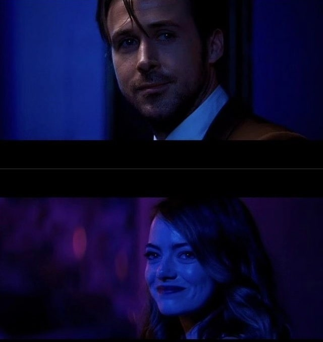

日日是好日
首页
归档
标签
搜索
Welcome to Seb's
December 24, 2019 · 约 10 字 · 1 分钟
电影
生活
又看了一遍「LaLaLand」。

🎄🎅圣诞快乐~🎅🎄
← Kubernetes学习笔记
Python爬虫踩坑 →
相关文章
Aug 08 2021
Time does not heal all wounds.It merely softens the pain and blurs the memories.
Aug 02 2020
2020秋招提前上岸啦！
Feb 17 2020
琴心剑魄今何在